Every modern computer uses binary logic, 1s and 0s, for computations. Theoretically, any numerical base can be used for computation. The numerical base (or radix) defines how many digits will be necessary to represent a certain number, this is the radix economy and is written as $$E(b,N)$$ for base $$b$$ and number $$N$$ and calculated with : ££E(b,N)=b\left \lfloor{log_b(N)+1}\right \rfloor ££ The lowest average radix economy is reached for base $$e$$. The best integer base is 3, not 2 ; ternary not binary.
Therefore a computer using ternary logic could be more efficient by requiring less digits and less circuitry for a similarly powerful processor. The most famous ternary computer was the Setun made by the soviets in the 1970s and was more efficient. However, binary processors are easier to develop and binary won. As Moore's law slows down, it might be time to bring ternary computing back to gain performance.
Switching to ternary logic requires redefining a whole new algebra, and a more complex one as the number of possible states and thus gates is larger. In this article, I will go through the most common ternary gates, their algebra and the notations I've chosen. Papers on the topic may use slightly different notations and gate symbols.
As the binary set of values is written $$\mathbb{B}=\{0,1\}$$, I will use $$\mathbb{T}$$ for the set of ternary values. There exist multiple ternary sets of values and thus multiple algebras : unbalanced ternary $$\mathbb{T}=\{0,1,2\}$$ perhaps the most obvious, balanced ternary $$\mathbb{T}=\{-,0,+\}$$ the most elegant in my opinion, unknown-state ternary $$\mathbb{T}=\{F,?,T\}$$ similar to an epistemological set of truth values, and a few others. I will only use balanced ternary. In practice on an electrical computer, balanced ternary would be represented by positive, negative and zero voltage. Exotic ternary computers could use micro-fluid direction or light polarization.
Analogous to the binary 8-bit byte and 4-bit nibble, I will define a 3-trit word as a tribble and a 9-trit word as a tryte. I've also seen tryte being used for a smaller 6-trit word, but I prefer to use powers of 3. A byte is two nibbles. A tryte is three tribbles.
One-input gates
In binary, a gate with one-input and one output can be represented as a two by one matrix. The following gate
| Input | Output |
|---|---|
| 0 | 1 |
| 1 | 0 |
Can be written with the matrix ££ \begin{bmatrix} 1\\ 0 \end{bmatrix} ££
Therefore there are $$2^2=4$$ possible one-input one output matrix in binary :
| Matrix | Schematic | Description | Name |
|---|---|---|---|
| $$ \begin{bmatrix} 0\\ 0 \end{bmatrix} $$ | Clear | CLR | |
| $$ \begin{bmatrix} 1\\ 1 \end{bmatrix} $$ | Mark | MRK | |
| $$ \begin{bmatrix} 0\\ 1 \end{bmatrix} $$ | Identity, buffer or pass | BUF | |
| $$ \begin{bmatrix} 1\\ 0 \end{bmatrix} $$ |  |
Inverter | NOT |
Only the last two are useful. We can also note that ISZ is the same gate as NNOT.
In ternary however, one-input and one output is a three by one matrix with three possible values for each cell, so $$3^3=27$$ possible gates. I wont list them all but the useful ones are :
| Matrix | Schematic | Description | Name | Symbol |
|---|---|---|---|---|
| $$ \begin{bmatrix} -\\ 0\\ + \end{bmatrix} $$ |  |
Identity, buffer or pass | BUF | $$A$$ |
| $$ \begin{bmatrix} +\\ 0\\ - \end{bmatrix} $$ | 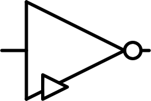 | Inverter | NOT | $$\overline A$$ |
| $$ \begin{bmatrix} +\\ +\\ - \end{bmatrix} $$ | 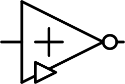 | Positively biased inverter | NOT | $$\hat{A}$$ |
| $$ \begin{bmatrix} +\\ -\\ - \end{bmatrix} $$ | Negatively biased inverter | NOT | $$\check{A}$$ | |
| $$ \begin{bmatrix} +\\ 0\\ + \end{bmatrix} $$ | 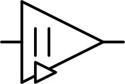 | Absolute value | ABS | $$|A|$$ |
| $$ \begin{bmatrix} 0\\ 0\\ + \end{bmatrix} $$ |  |
Clamp up | CLU | $$\left \lceil{A}\right \rceil$$ |
| $$ \begin{bmatrix} -\\ 0\\ 0 \end{bmatrix} $$ | 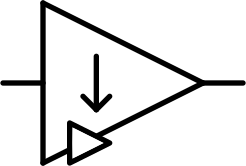 | Clamp down | CLD | $$\left \lfloor{A}\right \rfloor$$ |
| $$ \begin{bmatrix} 0\\ +\\ + \end{bmatrix} $$ |  |
Increment | INC | $$A^{+}$$ |
| $$ \begin{bmatrix} -\\ -\\ 0 \end{bmatrix} $$ | Decrement | DEC | $$A^{-}$$ | |
| $$ \begin{bmatrix} 0\\ +\\ - \end{bmatrix} $$ |  |
Rotate up | RTU | $$A$$╯ |
| $$ \begin{bmatrix} +\\ -\\ 0 \end{bmatrix} $$ |  |
Rotate down | RTD | $$A$$╮ |
| $$ \begin{bmatrix} -\\ -\\ 0 \end{bmatrix} $$ | Is positive | ISP | $$A^{=+}$$ | |
| $$ \begin{bmatrix} -\\ -\\ 0 \end{bmatrix} $$ |  |
Is zero | ISZ | $$A^{=0}$$ |
| $$ \begin{bmatrix} -\\ -\\ 0 \end{bmatrix} $$ | Is negative | ISN | $$A^{=-}$$ |
That's a lot of gates ! Most of them are only useful in rare situations when building a processor. The ones to remember are the buffer and the three inverter gates.
I won't show the implementation in transistors in this article but an important thing to not is that some gates are very easy to implement with a small amount of transistors and resistors, while others, like Rotate up and Rotate down, require using more complex two-inputs gates and cost much more.
Two-input gates
Similarly to one-input gates, two-inputs gates can also be represented with a matrix. For a simple binary OR gate :
| A | |||
|---|---|---|---|
| B | 0 | 1 | |
| 0 | 0 | 1 | |
| 1 | 1 | 1 |
Can be represented with the matrix ££ \begin{bmatrix} 0 & 1\\ 1 & 1 \end{bmatrix} ££
There are $$2^2=4$$ cells in this matrix and each can take one of the two binary values, so $$2^4=16$$ possible binary two-inputs gates. The three useful ones with their inverted versions are :
| Matrix | Schematic | Description | Name | Symbol |
|---|---|---|---|---|
| $$ \begin{bmatrix} 0 & 0\\ 0 & 1 \end{bmatrix} $$ | 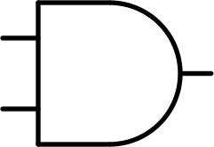 | And | AND | $$A \times B$$ |
| $$ \begin{bmatrix} 1 & 1\\ 1 & 0 \end{bmatrix} $$ | Inverted and | NAND | $$\overline {A \times B}$$ | |
| $$ \begin{bmatrix} 0 & 1\\ 1 & 1 \end{bmatrix} $$ | 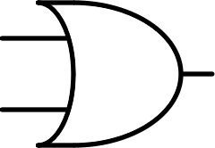 | Or | OR | $$A + B$$ |
| $$ \begin{bmatrix} 1 & 0\\ 0 & 0 \end{bmatrix} $$ | Inverted or | NOR | $$\overline {A + B}$$ | |
| $$ \begin{bmatrix} 0 & 1\\ 1 & 0 \end{bmatrix} $$ | 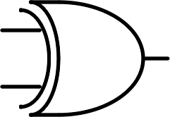 | Exclusive or | XOR | $$A \oplus B$$ |
| $$ \begin{bmatrix} 1 & 0\\ 0 & 1 \end{bmatrix} $$ | 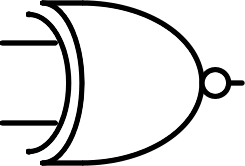 | Inverted exclusive or | XNOR | $$\overline {A \oplus B}$$ |
In ternary logic, two-inputs gates are represented with a three by three matrix. Thus there are $$3^9=19683$$ possible gates ! I will only list 6 useful gates and their inverted versions, however some other gates can be useful such as some asymmetrical gates (as in switching the inputs produces different results and the matrix is asymmetrical).
| Matrix | Schematic | Description | Name | Symbol |
|---|---|---|---|---|
| $$ \begin{bmatrix} - & - & - \\ - & 0 & 0\\ - & 0 & + \end{bmatrix} $$ | 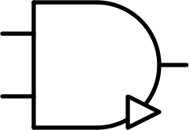 | And / minimum | AND | $$A \times B$$ |
| $$ \begin{bmatrix} + & + & + \\ + & 0 & 0\\ + & 0 & - \end{bmatrix} $$ | 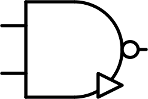 | Inverted and / minimum | AND | $$\overline {A \times B}$$ |
| $$ \begin{bmatrix} - & 0 & + \\ 0 & 0 & +\\ + & + & + \end{bmatrix} $$ | 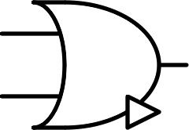 | Or / maximum | OR | $$A + B$$ |
| $$ \begin{bmatrix} + & 0 & - \\ 0 & 0 & -\\ - & - & - \end{bmatrix} $$ | 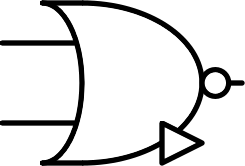 | Inverted or / maximum | NOR | $$\overline {A + B}$$ |
| $$ \begin{bmatrix} - & 0 & 0 \\ 0 & 0 & 0\\ 0 & 0 & + \end{bmatrix} $$ | 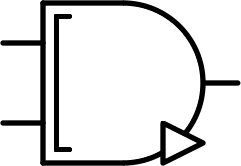 | Consensus | CONS | $$A ⊠ B$$ |
| $$ \begin{bmatrix} + & 0 & 0 \\ 0 & 0 & 0\\ 0 & 0 & - \end{bmatrix} $$ | 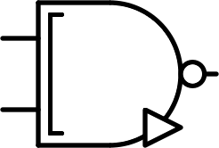 | Inverted consensus | NCONS | $$\overline {A ⊠ B}$$ |
| $$ \begin{bmatrix} - & - & 0 \\ - & 0 & +\\ 0 & + & + \end{bmatrix} $$ |  |
Any | ANY | $$A ⊞ B$$ |
| $$ \begin{bmatrix} + & + & 0 \\ + & 0 & -\\ 0 & - & - \end{bmatrix} $$ | 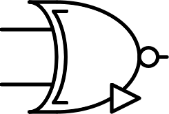 | Inverted any | NANY | $$\overline {A ⊞ B}$$ |
| $$ \begin{bmatrix} + & 0 & - \\ 0 & 0 & 0\\ - & 0 & + \end{bmatrix} $$ | 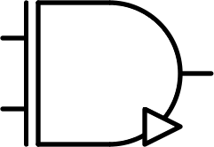 | Multiplication | MUL | $$A \otimes B$$ |
| $$ \begin{bmatrix} - & 0 & + \\ 0 & 0 & 0\\ + & 0 & - \end{bmatrix} $$ | 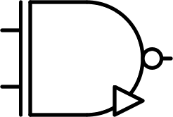 | Inverted multiplication | NMUL | $$\overline {A \otimes B}$$ |
| $$ \begin{bmatrix} + & - & 0 \\ - & 0 & +\\ 0 & + & - \end{bmatrix} $$ | 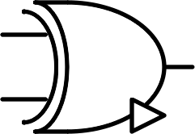 | Addition | SUM | $$A \oplus B$$ |
| $$ \begin{bmatrix} - & + & 0 \\ + & 0 & -\\ 0 & - & + \end{bmatrix} $$ | 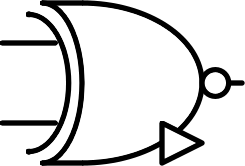 | Inverted addition | NSUM | $$\overline {A \oplus B}$$ |
AND and OR ternary gates are sometimes called MIN and MAX for obvious reasons. The MUL gate is also sometimes called XOR.
The gate symbols I used are similar to the US binary gate symbols with modifications for the more complex operations. In addition, as with the US symbols, a dot on the output signifies an inverted output. The small triangle indicates that it's a ternary gate, to differentiate between equivalent binary and ternary gates. The symbols are based on the binary AND and OR gates : if we only look at the 2x2 $$(0+)^2$$ submatrix of the ternary gates, some look like binary AND and other like binary OR, so this is the base used for their symbols, then alterations are added.
Some useful formulas
As said earlier, some gates are easy to implement with a few transistors and resistors, while others require combining other simpler gates. This increases the cost but also the transmission time of the signal through the gate and thus the length of the transient before reaching the static phase with the correct output of the circuit. This can be a bottleneck for the frequency of a logic circuit such as a processor. We will explore this more in detail with a future project. Therefore finding the best implementation of a gate is critical.
To find the formulas of logic gates from simple ones, I created a small and dirty Python script to test every possible combinations of basic logic gates with simple operation prototypes. For instance, every combinations with the pattern $$A \bigstar B$$ with $$\bigstar$$ a two-inputs gate, or every combinations with the pattern $$(\clubsuit(A)) \; \bigstar \; (\spadesuit(B))$$ with $$\clubsuit$$ and $$\spadesuit$$ one-input gates. The script searches all the combinations for the simplest solutions with the smallest transistor and resistor cost.
The simple one-input gates are BUF, NOT, NNOT, PNOT as well as CLU and CLD if we allow the use of diodes. The simple two-inputs gates are NAND, NOR, NCONS and NANY.
The more complex gates can be built with the formulas :
££|A| = \overline { \overline{A} \times A}££ ££A^+ = A⊞(+)££ ££A^- = A⊞(-)££However, in practice, we won't use those formulas when implementing the gates with transistors. For example, to implement the MUL gate, as AND and OR gates require inverting the output of the basic NAND and NOR gates, they are 50% more expensive. Thus, we prefer to use another formula, more complex on paper but simpler in circuitry ££A \otimes B = \overline{\overline{(A \times B)} \times (A + B)} ££ This gate is useful for instance to control one signal with an other : the signal comes in A, and if B is positive, the output is A, if B is negative, the output is NOT(A) and if B is zero, the output is null. Here is the diagram of the formula above :
MUL gate
Similarly, we can implement the SUM gate :

SUM gate
Here are other useful ternary algebra formulas :
££\overline{A + B} = \overline{A} \times \overline{B} ££ ££\overline{A \times B} = \overline{A} + \overline{B} ££ ££\overline{A ⊠ B} = \overline{A} ⊠ \overline{B} ££ ££\overline{A ⊞ B} = \overline{A} ⊞ \overline{B} ££ ££\overline{A \otimes B} = \overline{A} \otimes \overline{B} ££ ££\overline{A \oplus B} = \overline{A} \oplus \overline{B} ££ Go back to the list of projects